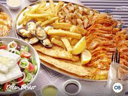

OCEAN BASKET
The first Ocean Basket seafood restaurant opened its doors in 1995 in Menlyn Park, Pretoria. Fats Lazarides had seen the opportunity to create a restaurant that served delicious seafood at affordable prices. In those days, seafood restaurants were reserved for the upper crust, and a portion of prawns was a real extravagance. Fortunately, Fats had always been one to swim against the current.
His first Ocean Basket was a measly 60 square meters, with just 6 tables. The menu offered only a handful of dishes, including fish and chips, prawns, hake, calamari and Kingklip. The seafood restaurant included a fresh fish deli. The landlord imposed restrictions on what could be sold; only one wine and a limited choice of soft drinks was served. In true Ocean Basket spirit, Fats invited customers to bring their own drinks and even their own salads.